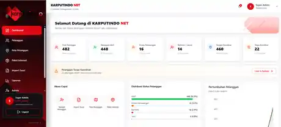
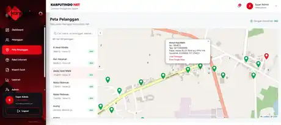
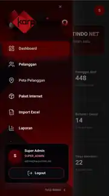
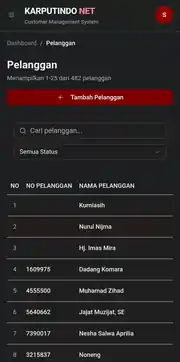

01
Customer Data Platform
Live Project ↗Karputindo.net




A customer database and mapping platform designed for internet service operations, with structured data management and location-based customer visibility.
Customer DatabaseExcel / CSV ImportInteractive MappingAdmin DashboardCloud Deployment
Case Study →Selected interface walkthrough
ChallengeOrganize customer, package, and location data in one operational system.
SolutionCentralized web dashboard with import, editing, mapping, and structured customer management.